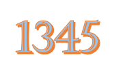

COLEGIO DE ESTUDIOS CIENTIFICOS Y
TECNOLOGICOS DEL ESTADO DE MEXICO
PLANTEL IXTLAHUACA
Elaborado por:Marisol Gómez Rodriguez.
Grupo:404. Número de lista:8 Fecha de Elaboración:21 de marzo de 2024.Hora:12:30 p.m.
Calcula la raiz cuadrada de un numero
Calculadora de Raíz Cuadrada
Calcula la raiz cuadrada

Todos los derechos reservados,Elaborado por:Marisol Gomez Rodriguez.
mari@gmail.com.file:///C:/Users/LAPTOP%20ASUS/Desktop/8_Marisol/raiz cuadrada de un numero